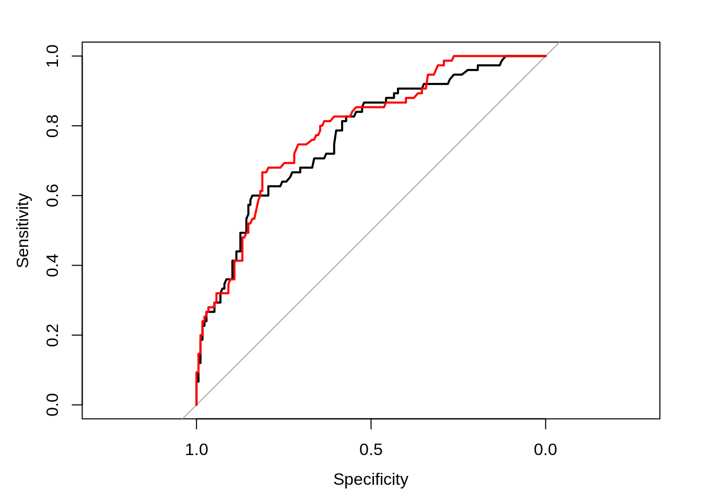
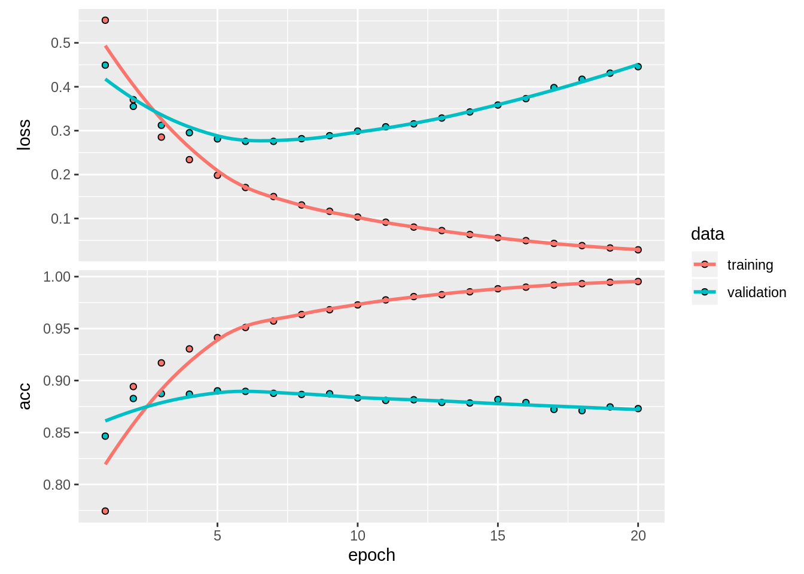
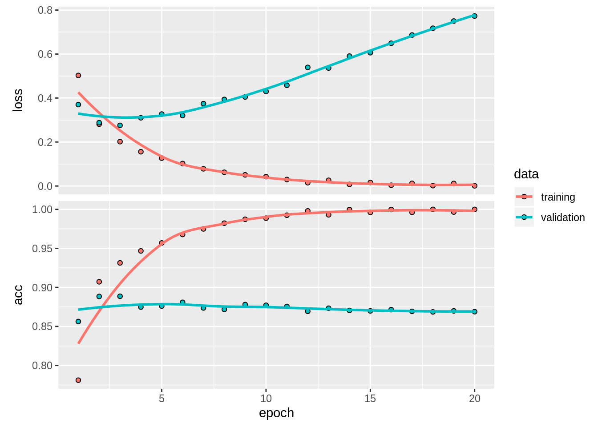

fulltree is constucted by the recursive binary splitting approach. Start with dividing the predictor space in two half-regions. This is done by testing for all predictors \(i\) and cut-off values \(s\), to find the two half planes \(R_1(i, s) = \{X|X_i<s\}\) and \(R_2(i, s) = \{X|X_i\geq s\}\) which gives the greates reduction in the deviance: \[
-2 \sum_{k=1}^K n_{jk} \log \hat{p}_{jk}
\] where \(\hat{p}_{jk}=n_{jk}/N_j\) is the proportion of training observations of class \(k\) in region \(j\). Then perform similar splits recursively for each of the defined regions, until the regions are sufficiently small.
This approach constructs a binary tree, in which the root corresponds to the whole predictor space. The internal nodes corresponds to the distinct splits of the predictor space, and the terminal nodes or leaves corresponds to the final regions in which we’ve separated the predictor space. It’s a greedy algortihm in which the regions are split accoding to the optimal choice at the “current” state, instead of considering if another split would have resulted in a better choice in the future.
While the approach in a) works well for the training data, the complexity of the tree may cause overfitting, and reduce the interpretability of the data. In such situations, a smaller tree containing fewer splits might both increase the understandability of the model, and lower the test error. Given a full tree built by recursive binary splitting, select a subtree which should minimize the test error rate. This is called prunning of the tree.
The amount of pruning given in the code is decided by cost complexity pruning. The function prune.misclass finds a sequence of subtrees it minimizes the cost-complexity function: \[
C_\alpha(T) = \frac{1}{n}\sum_i I(y_i \neq \hat{y}_k) + \alpha |T|
\] for a given non-negative parameter \(\alpha\). Then cv.tree estimates the test error on all of these trees using 5-fold cross validation. The size of the pruned tree is chosen as the one with the lowest CV-error rate, which is 4 as apparent from the given figures.
The full tree has a misclassification rate of 0.244, and an AUC of 0.7446, whilst for the the pruned tree the AUC is 0.7171, and the misclassification rate is 0.26. In other wods, the full tree scores better than the pruned one, but what is lost in performance, is gained in interpetability: While the full tree with a a total of 32 nodes, 15 of which are leaf nodes, is almost unreadable, the pruned tree with it’s three splits and four terminal nodes is very easy to follow.
Simple decision trees have a downside: They are non-robust with high variance, and a small change in data may cause a large change in the final tree. Thus the the result may be quite different for different splits between test and training data. Boostrap aggregation or bagging is a procedure to reduce variance in a statistical learning method, and is especially useful for decision trees.
Since bagged classification trees are based on a set of \(B\) different trees, it lacks interpratibility and simple visualization of the simple decision tree. The variable importance plots displays the importance of splits based on the different variables. The left plot computes variable importance based on OOB error, an estimate of the test misclassification rate in which the \(i\)’th observation is classified by the majority vote from the trees in which the observation was out-of-bag, i.e. not among the observations used to fit the tree. In the right plot the variable importance is computed by the mean decrease in the Gini index, or the increase in node purity for the variable splits.
As stated earlier, bagged trees lose some of the interpretability of the simple decision trees. While the variable importance plots recovers some of the interpratibility, it’s still got a long way to the intuitive display of both the full and pruned decision tree. What the bagged trees lack in interpretability, it makes up for in performance. With a higher accuracy and an AUC of 0.8158 it surpasses both the previous trees with a signficant amount.
plot(testbagroc, colorize = T)
plot(testrfroc, add = T, col = 2)
While decision trees are non-robust, and you might get quite different trees while building bagged trees, most of them will use a strong predictor in the to split. As these trees will be higly correlated, we won’t get the desired variance redution. Random forests try to fix this problem by only considering a randomly chosen subset of the overall predictors at each split. The mtry=4 parameter passed to the randomForest function is the number of parameters considered, and for classification trees this is usually chosen to be \(m \approx \sqrt{p}\), where \(p\) is the number of predictors. For the credit dataset, we round down from \(\sqrt{20} \approx 4.47\). As stated above, this approach decorrrelates the individual trees built from a bagging approach, and should therefore lead to a further reduction in variance. While the prediction accuracy on the test data is similar for bagging and random forest, the random forest approach has an AUC of 0.8358 somewhat higher than for the bagged trees.
In the case of the credit risk data, wrongfully classifying a bad credit risk as good is worse than the opposite. Therefore it could be smart to set the class-boundary such that we get a high specificity. In the figure above the ROC-curve for bagged trees in black is plotted against the ROC for random forest. For most values they are almost the same, but for an interval around a specificity of 0.75, the random forest approach is higher, and thus random forests is our preferred approach for this dataset.
The Bayes classifier is a simple rule of how classify a certain test observation with predictor vector \(x_0\). Given an observation, the rule is to assign the observation to the class of largest probability, i.e. selecting the class \(j\) for which \(Pr(Y = j | X = x_0)\) is largest. Having made some rule from training data, we use this information to compute the conditional probability. This results in that the Bayes classifier is the method that has least probability of misclassifying. It does not matter how many classes we introduce - the largest one always win.
The Bayesian decision boundary arises where probabilities of observing two classes are equal and largest, so it separates regions where we would classify differently. If \(Pr(Y = i | X=x_0) = Pr(Y = j|X = x_0)\) are the largest value of all \(i,j, i \neq j\), we have a boundary at \(x_0\). Two equal probabilities that are not the largest will not define this boundary. Having two variables this line will always be 50 % probability of observing either class. The Bayes decision boundary draws a hypersurface/multidimensional map for which classifications the classifier make.
Since the Bayes classifier has the lowest probability of misclassifying, the Bayes error rate (BER) is the lowest test error rate there is. We can use the expected prediction values of our whole set to find this test error rate. In a point \(x_0\) we have a probability \(p = max_j \{Pr(Y = j | X = x_0)\}\) of classifying correctly, i.e. the misclassification probability is \(1-p\), so for our entire set \(X\), \(BER = 1 - E(max_j(Y = j|X))\).
A good reason to have a test set would be to measure the error rate for the population we’re classifying. Even though we know that the BER is the lowest error rate, we do not know what it is, i.e. how presice we are classifying. If we do not care for the rate, and we by chance know the Bayes boundary, there is no reason to find another boundary - it won’t be better on the test set.
The difference between a support vector machine (SVM) and a support vector classifier (SVC) is that the last one is a generalization of the first. SVC is a SVM that only allows linear decision boundaries, making it a hyperplane, and is also called a soft margin classifier. SVM can take on non-linear forms.
SVM and the SVC creates a classification boundary, both using a soft-margin technique, where observations are separated by a surface trying to maximize its margin to nearby observations. The soft part comes from introducing some slack for misclassification, allowing the boarder to misclassify according to the slack, which is a tuning parameter. In the SVM function in R the parameter is called \(cost\), which is tuneable using tune (grid search). Other parameters consist of kernel, which specifies the shape of the SVM - linear or not. There are many kernels to choose from, here they use the common radial basis functions kernel. For non-linear boundaries we would want to specify the curvature, or rather how far a single training example can affect our boundary. This is controlled by the tuning parameter gamma, where small gamma would result in a flatter shape, and large values might overfit the surface to high complexity. The relation is \(\gamma = \frac{1}{2\sigma^2}\), the inverse of the variance, which gives an explanation to the low variance when overfitting. This is also tuneable by grid search. The grid search in tune is done by 10-fold cross-validation for all combinations of tuning parameters on constants splits in the data set. The best combination of lowest error rate is chosen. In the exercise we see that the optimal values for these tuning parameters are \(cost = 1, gamma = 5\).
The evaluation of the SVM decision boundary should be compared using the error rate compared to the BER. We want our error rate close to the BER, but if it is lower, we might expect some overfitting, since the BER should be the lowest test error rate. The lines appear to be very similar, but maybe this curve is too wiggly for the SVM, and we might want to try other values of gamma and cost nearby the “optimal” ones, since the SVM boundary seems to perform slightly better here. In addition, there is a small elliptic boundary in the upper left, which is strange.
The biplot is a way of combining info about all observations values, and visualizing them in two dimensions. As we see from the vectors in the biplot is that the first principal component mostly consists of tea, wine and beer, where wine has negative effect, and the other two positive. This is visible from reading off their values on the first upper axis, corresponding to their weight in PC1. The principal components are constructed to point in the most varying direction, i.e. explain the most varying combination of all variables. The second principal component is mostly made up from liquer (negative), coffee and cocoa. The last two weigh positive. Now knowing what the two axis explain we can start interprating the placement of each countries by reading off their values of the two components on the opposing axis’.
From inspecting the summary, in particular the vector components of PC1 and PC2, we see that the observations obviously coincide with the observations from the biplot. The two vectors consist of a weighted combination of each variable, but some of them has greater impact on the value of the principal component.
This analysis does really tell us something about drinking habits for certain countries and the similarities. For instance, Poland, Soviet Union and Hungary all have negative values of PC2, but seem quite neutral in PC1 - wine, tea and beer. The most significant negative factor is liquer, implying that these three countries have a similarity in high liquer consumption. PC1 being neutral could both mean that the consumption is high, but balanced, or a general low consumption. Other countries with negative PC2 values are also most probable placed there because of large liquer consumption. The components of PC1 have a more similar weight, forcing us to generalize more, but there are definately similarities. The negative values of Italy and Spain is probably because of large wine consumption, and Great Britain and Ireland most likely are similar in their consumption of tea and beer.
The distance between clusters for a single linkage is the smallest distance between two clusters, where the cluster can be either one or several points. Here, distance is not defined because there are several methods to measure it, for instance the intuitive euclidean distance, or correlation-based distance. For complete linkage the distance between two clusters is the distance between two elements in different clusters that are the furthest away from each other. We say it uses maximal intercluster dissimilarity. The average linkage makes use of the centroid of each cluster, and the distance between clusters is the distance between their centroids.
We could not decide which figure corresponds to which measure of distance by the lowest level, where all measures give the same lowest distance, though comparing the first cluster (Human and chimpanzee) with their link to gorilla, we could tell them apart. From the table we see that the distance between chimpanzee and human is 1, and their centroid is \(\frac{0+1}{2} = 0.5\). The new lowest average distance would be the one from the centroid to the gorilla, which is obviously \(2.5\), hence the figure B is the average linkage, with gorilla on level \(2.5\). The maximal intercluster dissimilarity is from the lowest cluster to gorilla, i.e. \(max{|0-3|, |1-3|}=3\), while the minimal intercluster dissimilarity is 2 - distance between chimpanzee and gorilla. Figure A has placed gorilla on height 3, which indicates that this is the complete linkage tree, while figure C has gorilla on height 2, which corresponds to the single linkage measure. For a large tree, the single linkage might produce very unbalanced trees compared to the other two methods.
The biplot is a way of combining info about all observations values, and visualizing them in two dimensions. As we see from the vectors in the biplot is that the first principal component mostly consists of tea, wine and beer, where wine has negative effect, and the other two positive. This is visible from reading off their values on the first upper axis, corresponding to their weight in PC1. The principal components are constructed to point in the most varying direction, i.e. explain the most varying combination of all variables. The second principal component is mostly made up from liquer (negative), coffee and cocoa. The last two weigh positive. Now knowing what the two axis explain we can start interprating the placement of each countries by reading off their values of the two components on the opposing axis’.
From inspecting the summary, in particular the vector components of PC1 and PC2, we see that the observations obviously coincide with the observations from the biplot. The two vectors consist of a weighted combination of each variable, but some of them has greater impact on the value of the principal component.
This analysis does really tell us something about drinking habits for certain countries and the similarities. For instance, Poland, Soviet Union and Hungary all have negative values of PC2, but seem quite neutral in PC1 - wine, tea and beer. The most significant negative factor is liquer, implying that these three countries have a similarity in high liquer consumption. PC1 being neutral could both mean that the consumption is high, but balanced, or a general low consumption. Other countries with negative PC2 values are also most probable placed there because of large liquer consumption. The components of PC1 have a more similar weight, forcing us to generalize more, but there are definately similarities. The negative values of Italy and Spain is probably because of large wine consumption, and Great Britain and Ireland most likely are similar in their consumption of tea and beer.
#b) The distance between clusters for a single linkage is the smallest distance between two clusters, where the cluster can be either one or several points. Here, distance is not defined because there are several methods to measure it, for instance the intuitive euclidean distance, or correlation-based distance. For complete linkage the distance between two clusters is the distance between two elements in different clusters that are the furthest away from each other. We say it uses maximal intercluster dissimilarity. The average linkage makes use of the centroid of each cluster, and the distance between clusters is the distance between their centroids.
We could not decide which figure corresponds to which measure of distance by the lowest level, where all measures give the same lowest distance, though comparing the first cluster (Human and chimpanzee) with their link to gorilla, we could tell them apart. From the table we see that the distance between chimpanzee and human is 1, and their centroid is \(\frac{0+1}{2} = 0.5\). The new lowest average distance would be the one from the centroid to the gorilla, which is obviously \(2.5\), hence the figure B is the average linkage, with gorilla on level \(2.5\). The maximal intercluster dissimilarity is from the lowest cluster to gorilla, i.e. \(max{|0-3|, |1-3|}=3\), while the minimal intercluster dissimilarity is 2 - distance between chimpanzee and gorilla. Figure A has placed gorilla on height 3, which indicates that this is the complete linkage tree, while figure C has gorilla on height 2, which corresponds to the single linkage measure. For a large tree, the single linkage might produce very unbalanced trees compared to the other two methods.
A non-linear activation function such as relu is used to capture more complex patterns in the data. Without them each layer would only be able to learn linear transformations of the input data and a deep stack of linear layers would still implement a linear operation. The activation function relu add non-linearity to the model.
Classifiying a review as good or bad is a binary classification. Therefore we need to use binary_crossentropy as loss function. This function is activated when we use the sigmoid last-layer activation function. We cannot use the relu function in the output layer since we do not know its max value and can therefore not choose a classification boundry.
rm(list=ls())
library(keras)
library(magrittr)
# Data preparation
imdb <- dataset_imdb(num_words = 10000)
train_data <- imdb$train$x
train_labels <- imdb$train$y
test_data <- imdb$test$x
test_labels <- imdb$test$y
word_index <- dataset_imdb_word_index()
reverse_word_index <- names(word_index)
names(reverse_word_index) <- word_index
decoded_review <- sapply(train_data[[1]], function(index) {
word <- if (index >= 3) reverse_word_index[[as.character(index - 3)]]
if (!is.null(word)) word else "?"
})
# Turn data to tensor format
vectorize_sequences <- function(sequences, dimension = 10000) {
results <- matrix(0, nrow = length(sequences), ncol = dimension)
for (i in 1:length(sequences))
results[i, sequences[[i]]] <- 1
results
}
x_train <- vectorize_sequences(train_data)
x_test <- vectorize_sequences(test_data)
y_train <- as.numeric(train_labels)
y_test <- as.numeric(test_labels)
# Define and compile models
model.simple <- keras_model_sequential() %>%
layer_dense(units = 4, activation = "relu", input_shape = c(10000)) %>%
layer_dense(units = 4, activation = "relu") %>%
layer_dense(units = 1, activation = "sigmoid")
model.complex <- keras_model_sequential() %>%
layer_dense(units = 32, activation = "relu", input_shape = c(10000)) %>%
layer_dense(units = 32, activation = "relu") %>%
layer_dense(units = 1, activation = "sigmoid")
model.simple %>% compile(
optimizer = "rmsprop",
loss = "binary_crossentropy",
metrics = c("accuracy")
)
model.complex %>% compile(
optimizer = "rmsprop",
loss = "binary_crossentropy",
metrics = c("accuracy")
)
# Approach validation
val_indices <- 1:10000
fit.simple <- model.simple %>% fit(
x_train[-val_indices,],
y_train[-val_indices],
epochs = 20,
batch_size = 512,
validation_data = list(x_train[val_indices,], y_train[val_indices])
)
fit.complex <- model.complex %>% fit(
x_train[-val_indices,],
y_train[-val_indices],
epochs = 20,
batch_size = 512,
validation_data = list(x_train[val_indices,], y_train[val_indices])
)
plot(fit.simple)
plot(fit.complex) For the 16-layer model the validation accuracy reaches its maximum after 5 epochs, where the accuracy attains the value 0.889. The simpler model using 4 units in the hidden layers, attains its maximum validation accuracy of 0.8766 after 9 epochs, but with a significantly higher loss value. The complex model using 32 units attains its maximum validation accuracy of 0.8875 after 4 epochs. Still the 6 first epochs all seems to be around the same value, so the loss functions start to increase from the first epoch, which indicates that the model is too complex.
There are four common ways to prevent overfitting in neural networks besides reducing network complexity: